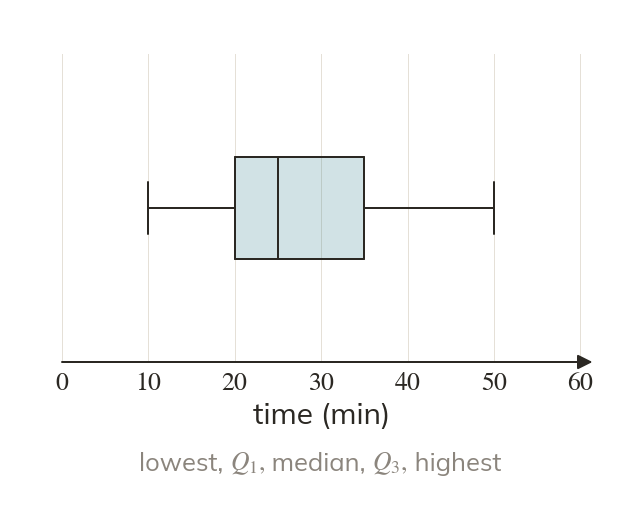
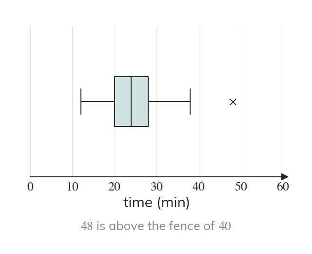
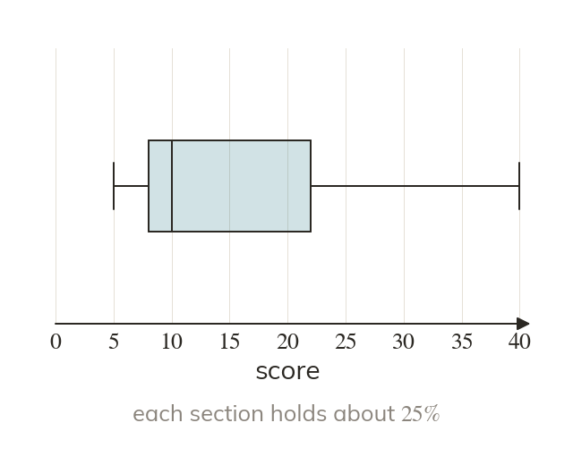
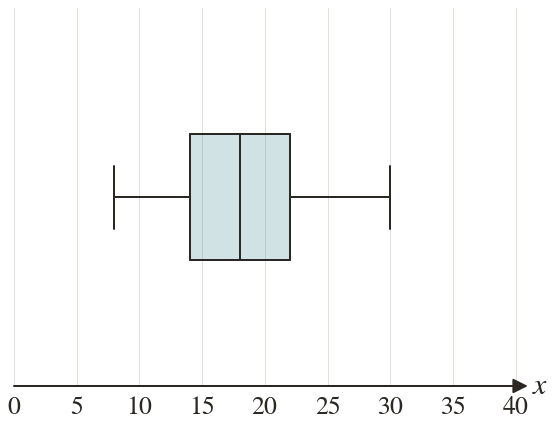
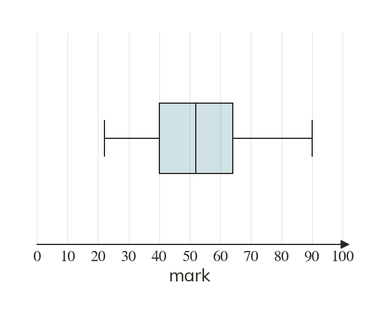
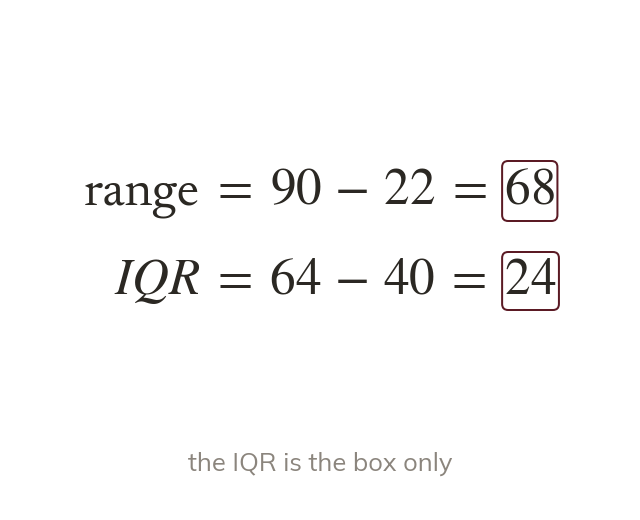
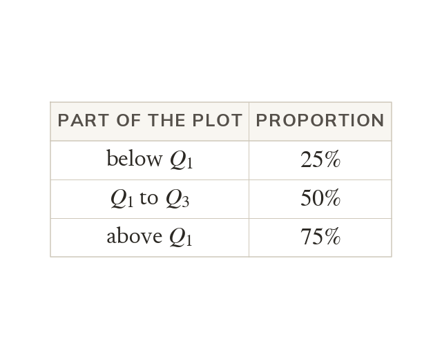
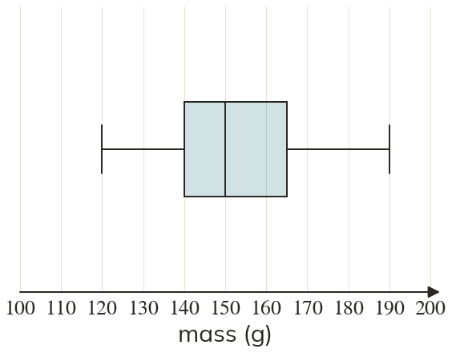
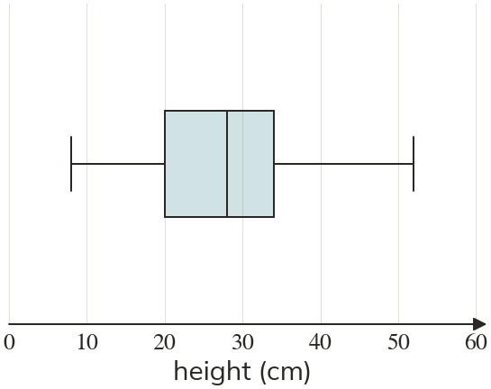

Five values
A box plot shows the lowest value, the quartiles, the median and the highest value. The box runs from to with the median inside it.
A box plot puts the quartiles, the extremes and the outliers in one picture, so a data set can be read at a glance. Box plots drawn on the same scale are how the last lesson of the chapter compares two data sets.
Work down the page at your own pace. Write every answer in your book first, then click to check it.
Read each card, then follow the worked examples one step at a time.

A box plot shows the lowest value, the quartiles, the median and the highest value. The box runs from to with the median inside it.

Find the fences before drawing. An outlier is a cross, and its whisker stops at the last value that is not an outlier.

Each of the four sections holds about a quarter of the values. A long section means the values there are spread out, not that there are more.

Pick an answer. If it's wrong, the feedback tells you which mistake it was.
Write the blanks in your book first, then tap each one to check.
Read each card, then follow the worked examples one step at a time.

The quartiles are the ends of the box and the median is the line inside it. The whiskers end at the lowest and highest values.

The range is the highest value minus the lowest. The IQR is the length of the box,

Each section holds about of the values, so the box holds about Multiply by the number of values to estimate a count.

Pick an answer. If it's wrong, the feedback tells you which mistake it was.
Write the blanks in your book first, then tap each one to check.

Finished? Next lesson: S3.3 Cumulative Frequency.
For each skill, tap the one that is true for you today. Your Revise pages start with anything you mark Not yet.
Your ratings are saved on this device only.
Log in, then search for a code to practise that skill.